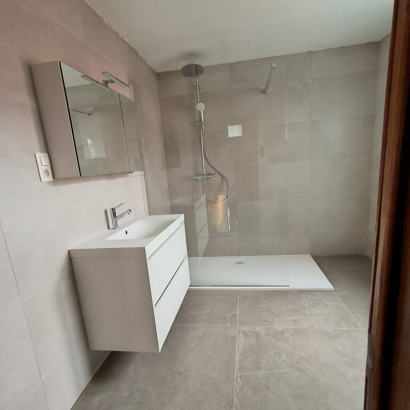
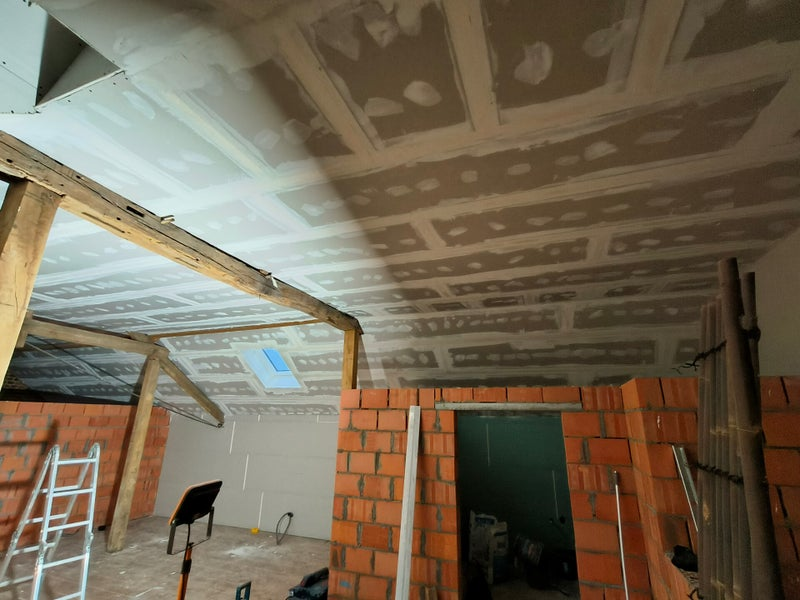
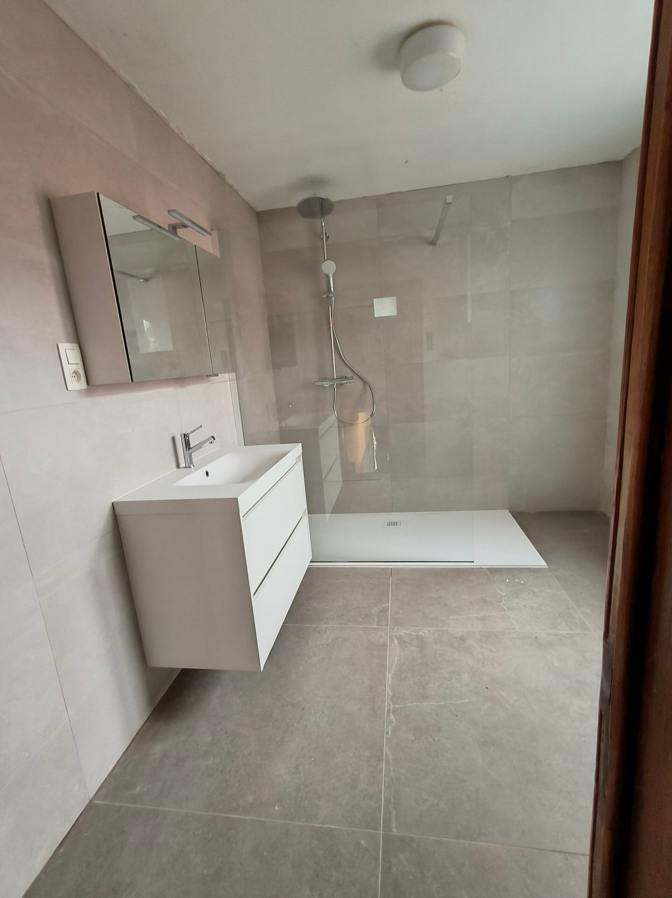
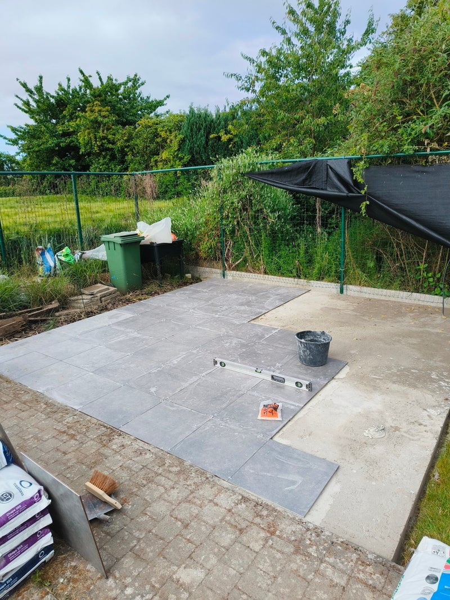
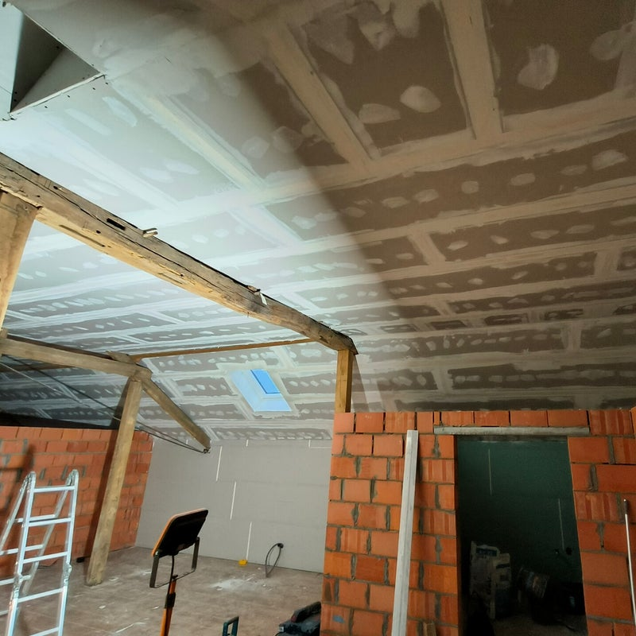
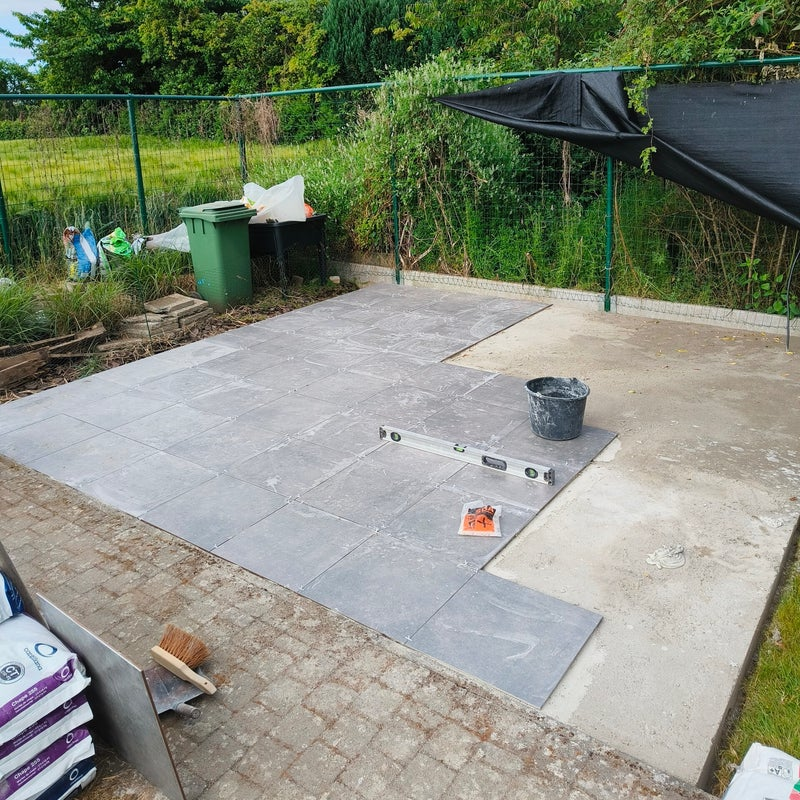
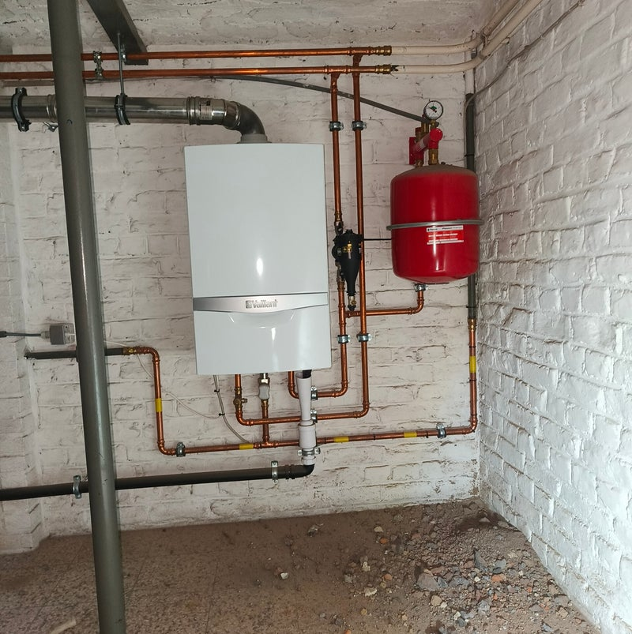
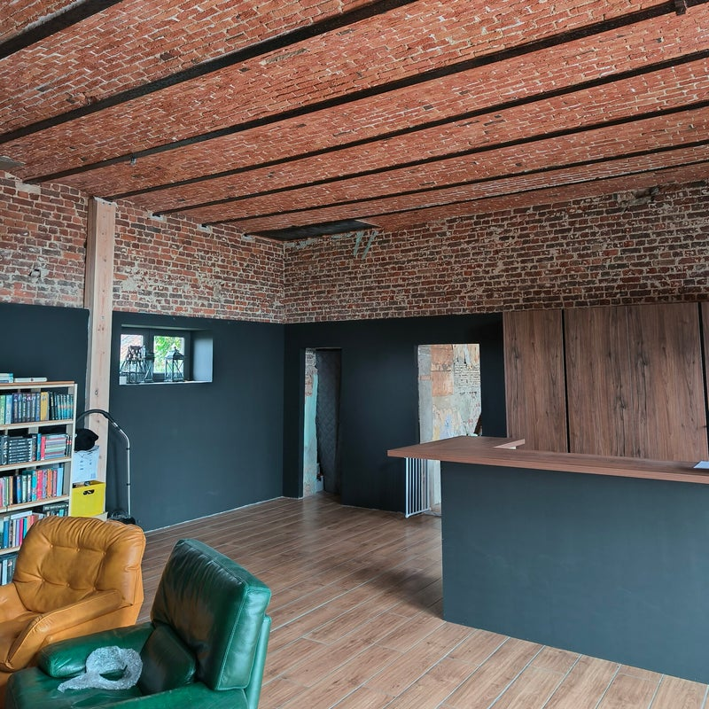
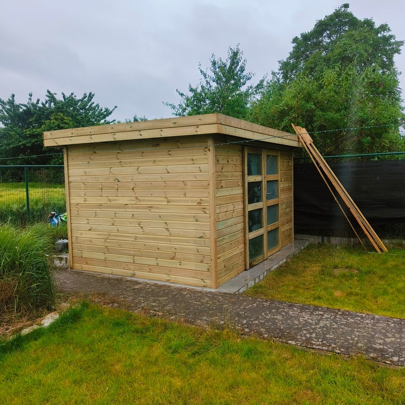
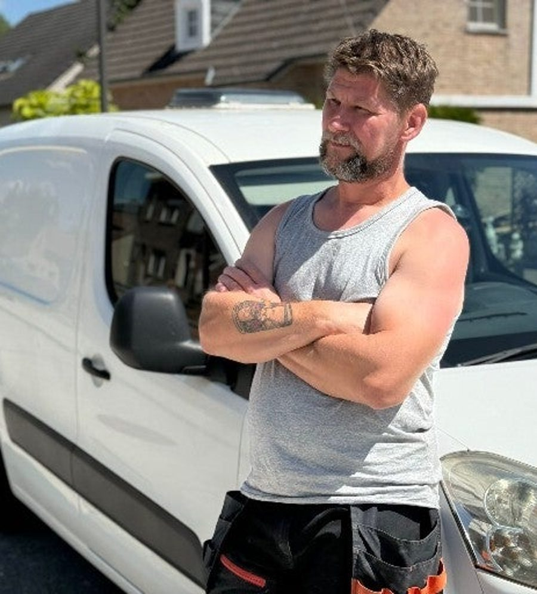

Badkamers
Volledige renovatie met tegelwerk, en advies over indeling en materialen.
Gyproc, tegelwerk, sanitair en afwerking: ik doe het zelf, van begin tot einde. Met duidelijke afspraken en een werf die ik proper achterlaat.



Een nieuwe badkamer, een zolder die eindelijk een kamer wordt of een lek dat dringend moet stoppen. Het werk op de foto's heb ik zelf gedaan.

Volledige renovatie met tegelwerk, en advies over indeling en materialen.

Voorzetwanden, plafonds en scheidingswanden in gipsplaat.

Binnen en buiten: keuken, toilet, badkamer of de vloer van je leefruimte.

Kranen en toestellen plaatsen of vervangen, aansluitingen en lekken herstellen.

Plinten, lijsten, deuren en ramen netjes afwerken, en klein schrijnwerk.

Geplaatst van fundering tot afwerking.

Ik ben Lukasz, en ik werk al meer dan 15 jaar in woningrenovatie. Bij Renoluk heb je met mij te maken, van de eerste afspraak tot het laatste stukje afwerking.
Ik werk nauwkeurig, denk mee met de klant en lever degelijk werk waar je op kan vertrouwen.
Foto's van mijn eigen werven, van ruwbouw tot het eindresultaat. Tik op een foto om ze groot te zien.

Drie klanten, drie keer vijf sterren.
“Dit bedrijf is een echte aanrader. Komt correct de afspraken na, is stipt en vriendelijk, werkt zeer ordelijk en proper.”
“Alles werd netjes en professioneel uitgevoerd. En nu genieten we elke dag van een heerlijke douche met perfect warm water.”
“Heel goede service, afspraken worden perfect nagekomen en de opgeleverde werken zijn van hoge kwaliteit.”
Klant geweest? Laat een review achter op Google
Vertel kort wat er moet gebeuren. Een foto via WhatsApp helpt al veel.
Ik kom kijken en je krijgt een duidelijke prijs, zonder verplichting.
Op de afgesproken dag, netjes uitgevoerd en proper achtergelaten.
Nee. De offerte is gratis en vrijblijvend. Je beslist pas als je de prijs gezien hebt.
Ja. Een lekkende kraan, een plint die los zit of een binnendeur die moet worden afgewerkt: bel gerust, ook voor het kleinere werk.
Ja. Ik begeleid de volledige renovatie: tegelwerk, sanitair en afwerking. Ik geef ook advies over de indeling en de materialen.
In Tienen en omgeving. Woon je wat verder, vraag het gerust even na.
Zeker, op 0494 48 36 90. Dan kan ik al een eerste idee geven voor ik langskom.
Bellen, mailen of een berichtje sturen: kies wat jij het makkelijkst vindt.
Ik bekijk je vraag en neem snel contact op. Lukasz
Een eerste schets, op maat van Renoluk. Jullie kiezen de stijl, ik zorg dat alles klopt.
één keer, alles inbegrepen
Geen voorschot. Je betaalt pas als de site klaar is.
Hosting en domein op jouw naam. Een aanpassing vraag je per keer aan.
Hosting en domein inbegrepen. Nieuwe suggesties en wijzigingen zet ik er voor je op.
mijn aanraderStijn Vranken · 0496 25 14 45 · info@digital-impression.be